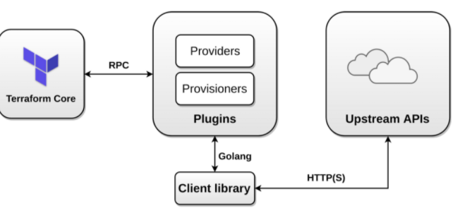
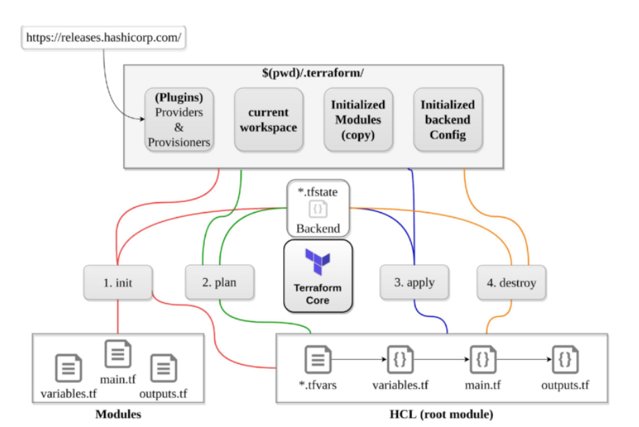
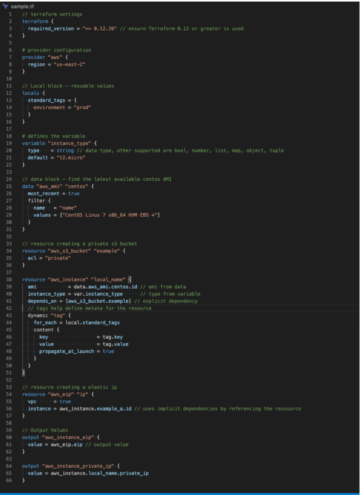

L2 Terraform Cheat Sheet
- An open source provisioning declarative tool that based on Infrastructure as a Code paradigm
- designed on immutable infrastructure principles
- Written in Golang and uses own syntax – HCL (Hashicorp Configuration Language), but also supports JSON
- Helps to evolve the infrastructure, safely and predictably
- Applies Graph Theory to IaaC and provides Automation, Versioning and Reusability
- Terraform is a multipurpose composition tool:
- Composes multiple tiers (SaaS/PaaS/IaaS)
- A plugin-based architecture model
- Terraform is not a cloud agnostic tool. It embraces all major Cloud
- Providers and provides common language to orchestrate the infrastructure resources
- Terraform is not a configuration management tool and other tools like chef, ansible exists in the market.
1、Terraform Architecture

2、Terraform Providers (Plugins)
- provide abstraction above the upstream API and is responsible for understanding API interactions and exposing resources.
- Invoke only upstream APIs for the basic CRUD operations
- Providers are unaware of anything related to configuration loading, graph theory, etc.
- supports multiple provider instances using
aliasfor e.g. multiple aws provides with different region - can be integrated with any API using providers framework
- Most providers configure a specific infrastructure platform (either cloud or self-hosted).
- can also offer local utilities for tasks like generating random numbers for unique resource names.
3、Terraform Provisioners
-
run code locally or remotely on resource creation
- local exec executes code on the machine running terraform
- remote exec
- runs on the provisioned resource
- supports ssh and winrm
- requires inline list of commands
-
should be used as a last resort
- are defined within the resource block.
- support types – Create and Destroy
- if creation time fails, resource is tainted if provisioning failed, by default. (next apply it will be re-created)
- behavior can be overridden by setting the
on_failuretocontinue, which means ignore and continue - for destroy, if it fails – resources are not removed
4、Terraform Workspaces
- helps manage multiple distinct sets of infrastructure resources or environments with the same code.
- just need to create needed workspace and use them, instead of creating a directory for each environment to manage
- state files for each workspace are stored in the directory
terraform.tfstate.d terraform workspace new devcreates a new workspace and switches to it as wellterraform workspace select devhelps select workspaceterraform workspace listlists the workspaces and shows the current active one with*- does not provide strong separation as it uses the same backend
5、Terraform Workflow

5-1 init
initializesa working directory containing Terraform configuration files.-
performs
- backend initialization , storage for terraform state file.
- modules installation, downloaded from terraform registry to local path
- provider(s) plugins installation, the plugins are downloaded in the sub-directory of the present working directory at the path of
.terraform/plugins
-
supports
-upgradeto update all previously installed plugins to the newest version that complies with the configuration’s version constraints - is safe to run multiple times, to bring the working directory up to date with changes in the configuration
- does not delete the existing configuration or state
5-2 validate
- validates syntactically for format and correctness.
- is used to validate/check the syntax of the Terraform files.
- verifies whether a configuration is syntactically valid and internally consistent, regardless of any provided variables or existing state.
- A syntax check is done on all the terraform files in the directory, and will display an error if any of the files doesn’t validate.
5-3 plan
- create a execution plan
- traverses each vertex and requests each provider using parallelism
- calculates the difference between the last-known state and the current state and presents this difference as the output of the terraform plan operation to user in their terminal
- does not modify the infrastructure or state.
- allows a user to see which actions Terraform will perform prior to making any changes to reach the desired state
- will scan all
*.tffiles in the directory and create the plan - will perform refresh for each resource and might hit rate limiting issues as it calls provider APIs
- all resources refresh can be disabled or avoided using
-refresh=falseortarget=xxxxor- break resources into different directories.
- supports
-outto save the plan
5-4 apply
- apply changes to reach the desired state.
- scans the current directory for the configuration and applies the changes appropriately.
- can be provided with a explicit plan, saved as out from
terraform plan - If no explicit plan file is given on the command line,
terraform applywill create a new plan automatically and prompt for approval to apply it - will modify the infrastructure and the state.
- if a resource successfully creates but fails during provisioning,
- Terraform will error and mark the resource as “tainted”.
- A resource that is tainted has been physically created, but can’t be considered safe to use since provisioning failed.
- Terraform also does not automatically roll back and destroy the resource during the apply when the failure happens, because that would go against the execution plan: the execution plan would’ve said a resource will be created, but does not say it will ever be deleted.
- does not import any resource.
- supports
-auto-approveto apply the changes without asking for a confirmation - supports
-targetto apply a specific module
5-5 refresh
- used to reconcile the state Terraform knows about (via its state file) with the real-world infrastructure
- does not modify infrastructure, but does modify the state file
5-6 destroy
- destroy the infrastructure and all resources
- modifies both state and infrastructure
terraform destroy -targetcan be used to destroy targeted resourcesterraform plan -destroyallows creation of destroy plan
5-7 import
- helps import already-existing external resources, not managed by Terraform, into Terraform state and allow it to manage those resources
- Terraform is not able to auto-generate configurations for those imported modules, for now, and requires you to first write the resource definition in Terraform and then import this resource
5-8 taint
- marks a Terraform-managed resource as tainted, forcing it to be destroyed and recreated on the next apply.
- will not modify infrastructure, but does modify the state file in order to mark a resource as tainted. Infrastructure and state are changed in next apply.
- can be used to taint a resource within a module
5-9 fmt
format to lint the code into a standard format
5-10 console
command provides an interactive console for evaluating expressions.
6、Terraform Modules
- enables code reuse
- supports versioning to maintain compatibility
- stores code remotely
- enables easier testing
- enables encapsulation with all the separate resources under one
- configuration block
- modules can be nested inside other modules, allowing you to quickly spin up whole separate environments.
- can be referred using source attribute
- supports Local and Remote modules
- Local modules are stored alongside the Terraform configuration (in a separate directory, outside of each environment but in the same repository) with source path
./or../ - Remote modules are stored externally in a separate repository, and supports versioning
- Local modules are stored alongside the Terraform configuration (in a separate directory, outside of each environment but in the same repository) with source path
- supports following backends
- Local paths
- Terraform Registry
- GitHub
- Bitbucket
- Generic Git, Mercurial repositories
- HTTP URLs
- S3 buckets
- GCS buckets
6-1 Module requirements
- must be on GitHub and must be a public repo, if using public registry.
- must be named
terraform-<PROVIDER>-<NAME>, where<NAME>reflects the type of infrastructure the module manages and<PROVIDER>is the main provider where it creates that infrastructure. for e.g.terraform-google-vaultorterraform-aws-ec2-instance. - must maintain
x.y.ztags for releases to identify module versions. Release tag names must be a semantic version, which can optionally be prefixed with a v for example, v1.0.4 and 0.9.2. Tags that don’t look like version numbers are ignored. - must maintain a Standard module structure, which allows the registry to inspect the module and generate documentation, track resource usage, parse submodules and examples, and more.
7、Terraform Read and write configuration

7-1 Resources
- resource are the most important element in the Terraform language that describes one or more infrastructure objects, such as compute instances etc
- resource type and local name together serve as an identifier for a given resource and must be unique within a module for e.g.
aws_instance.local_name
7-2 Data Sources
- data allow data to be fetched or computed for use elsewhere in Terraform configuration
- allows a Terraform configuration to make use of information defined outside of Terraform, or defined by another separate Terraform configuration
7-3 Variables
- variable serve as parameters for a Terraform module and act like function arguments
- allows aspects of the module to be customized without altering the module’s own source code, and allowing modules to be shared between different configurations
- can be defined through multiple ways
- command line for e.g.
-var="image_id=ami-abc123" - variable definition files
.tfvarsor.tfvars.json. By default, terraform automatically loads- Files named exactly
terraform.tfvarsorterraform.tfvars.json. - Any files with names ending in
.auto.tfvarsor.auto.tfvars.json - file can also be passed with
-var-file
- Files named exactly
- environment variables can be used to set variables using the format
TF_VAR_name
- command line for e.g.
Environment variables
terraform.tfvarsfile, if present.terraform.tfvars.jsonfile, if present.- Any
*.auto.tfvarsor*.auto.tfvars.jsonfiles, processed in lexical order of their filenames. - Any
-varand-var-fileoptions on the command line, in the order they are provided. Terraform loads variables in the following order, with later sources taking precedence over earlier ones:
7-4 Local Values
- locals assigns a name to an expression, allowing it to be used multiple times within a module without repeating it.
- are like a function’s temporary local variables.
- helps to avoid repeating the same values or expressions multiple times in a configuration.
7-5 Output
- are like function return values.
- output can be marked as containing sensitive material using the optional
sensitiveargument, which prevents Terraform from showing its value in the list of outputs. However, they are still stored in the state as plain text. - In a parent module, outputs of child modules are available in expressions as
module.<MODULE NAME>.<OUTPUT NAME>.
7-6 Named Values
- is an expression that references the associated value for e.g.
aws_instance.local_name, data.aws_ami.centos,var.instance_typeetc. - support Local named values for e.g
count.index
7-7 Dependencies
identifies implicit dependencies as Terraform automatically infers when one resource depends on another by studying the resource attributes used in interpolation expressions for e.g aws_eip on resource aws_instance
explicit dependencies can be defined using depends_on where dependencies between resources that are not visible to Terraform
7-8 Data Types
-
supports primitive data types of
- string, number and bool
- Terraform language will automatically convert number and bool values to string values when needed
-
supports complex data types of
- list – a sequence of values identified by consecutive whole numbers starting with zero.
- map – a collection of values where each is identified by a string label.
- set – a collection of unique values that do not have any secondary identifiers or ordering.
-
supports structural data types of
- object – a collection of named attributes that each have their own type
- tuple – a sequence of elements identified by consecutive whole numbers starting with zero, where each element has its own type.
7-9 Built-in Functions
- includes a number of built-in functions that can be called from within expressions to transform and combine values for e.g. min, max, file, concat, element, index, lookup etc.
- does not support user-defined functions
7-10 Dynamic Blocks
acts much like a for expression, but produces nested blocks instead of a complex typed value. It iterates over a given complex value, and generates a nested block for each element of that complex value.
7-11 Terraform Comments
supports three different syntaxes for comments:
#///*and*/
8、Terraform Backends
- determines how state is loaded and how an operation such as apply is executed
- are responsible for storing state and providing an API for optional state locking
- needs to be initialized
- if switching the backed for the first time setup, Terraform provides a migration option
8-1 helps
- collaboration and working as a team, with the state maintained remotely and state locking
- can provide enhanced security for sensitive data
- support remote operations
8-2 supports local vs remote backends
- local (default) backend stores state in a local JSON file on disk
-
remote backend stores state remotely like S3, OSS, GCS, Consul and support features like remote operation, state locking, encryption, versioning etc.
-
supports partial configuration with remaining configuration arguments provided as part of the initialization process
- Backend configuration doesn’t support interpolations.
- GitHub is not the supported backend type in Terraform.
9、Terraform State Management
- state helps keep track of the infrastructure Terraform manages
- stored locally in the
terraform.tfstate - recommended not to edit the state manually
- Use
terraform statecommand- mv – to move/rename modules
- rm – to safely remove resource from the state. (destroy/retain like)
- pull – to observe current remote state
- list & show – to write/debug modules
10、State Locking
- happens for all operations that could write state, if supported by backend
- prevents others from acquiring the lock & potentially corrupting the state
-
backends which support state locking are
- azurerm
- Hashicorp consul
- Tencent Cloud Object Storage (COS)
- etcdv3
- Google Cloud Storage GCS
- HTTP endpoints
- Kubernetes Secret with locking done using a Lease resource
- AliCloud Object Storage OSS with locking via TableStore
- PostgreSQL
- AWS S3 with locking via DynamoDB
- Terraform Enterprise
-
Backends which do not support state locking are
- artifactory
- etcd
-
can be disabled for most commands with the
-lockflag - use force-unlock command to manually unlock the state if unlocking failed
11、State Security
- can contain sensitive data, depending on the resources in use for e.g passwords and keys
- using local state, data is stored in plain-text JSON files using remote state, state is held in memory when used by Terraform. It may be encrypted at rest, if supported by backend for e.g. S3, OSS
12、Terraform Logging
- debugging can be controlled using
TF_LOG, which can be configured for different levels TRACE, DEBUG, INFO, WARN or ERROR, with TRACE being the more verbose. - logs path can be controlled
TF_LOG_PATH.TF_LOGneeds to be specified.
13、Terraform Cloud and Terraform Enterprise
- Terraform Cloud provides Cloud Infrastructure Automation as a Service. It is offered as a multi-tenant SaaS platform and is designed to suit the needs of smaller teams and organizations. Its smaller plans default to one run at a time, which prevents users from executing multiple runs concurrently.
- Terraform Enterprise is a private install for organizations who prefer to self-manage. It is designed to suit the needs of organizations with specific requirements for security, compliance and custom operations.
13-1 Terraform Cloud provides features
- Remote Terraform Execution – supports Remote Operations for Remote Terraform execution which helps provide consistency and visibility for critical provisioning operations.
- Workspaces – organizes infrastructure with workspaces instead of directories. Each workspace contains everything necessary to manage a given collection of infrastructure, and Terraform uses that content whenever it executes in the context of that workspace.
- Remote State Management – acts as a remote backend for the Terraform state. State storage is tied to workspaces, which helps keep state associated with the configuration that created it.
- Version Control Integration – is designed to work directly with the version control system (VCS) provider.
- Private Module Registry – provides a private and central library of versioned & validated modules to be used within the organization
- Team based Permission System – can define groups of users that match the organization’s real-world teams and assign them only the permissions they need
- Sentinel Policies – embeds the Sentinel policy-as-code framework, which lets you define and enforce granular policies for how the organization provisions infrastructure. Helps eliminate provisioned resources that don’t follow security, compliance, or operational policies.
- Cost Estimation – can display an estimate of its total cost, as well as any change in cost caused by the proposed updates
- Security – encrypts state at rest and protects it with TLS in transit.
13-2 Terraform Enterprise features
- includes all the Terraform Cloud features with
- Audit – supports detailed audit logging and tracks the identity of the user requesting state and maintains a history of state changes.
- SSO/SAML – SAML for SSO provides the ability to govern user access to your applications.
Terraform Enterprise currently supports running under the following operating systems for a Clustered deployment:
- Ubuntu 16.04.3 – 16.04.5 / 18.04
- Red Hat Enterprise Linux 7.4 through 7.7
- CentOS 7.4 – 7.7
- Amazon Linux
- Oracle Linux
- Clusters currently don’t support other Linux variants.
Terraform Cloud currently supports following VCS Provider
- GitHub.com
- GitHub.com (OAuth)
- GitHub Enterprise
- GitLab.com
- GitLab EE and CE
- Bitbucket Cloud
- Bitbucket Server
- Azure DevOps Server
- Azure DevOps Services
A Terraform Enterprise install that is provisioned on a network that does not have Internet access is generally known as an air-gapped install. These types of installs require you to pull updates, providers, etc. from external sources vs. being able to download them directly.